| 1. 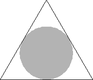 | 2. 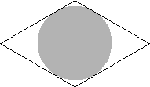 | 3. 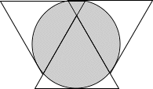 | ||
| r = √3/6 = .288+ Trivial. | r = √3/4 = .433+ Found by Erich Friedman in 1997. | r = (38√3 - 9) / 109 = .521+ Found by Maurizio Morandi in June 2009. |
| 4. 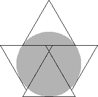 | 5. 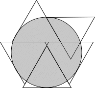 | 6. 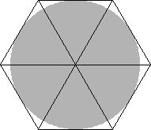 | ||
| r = (9√3 - 2√22) / 10 = .620+ Found by Trevor Green in July 1999. | r = (79√3 - 3√79) / 152 = .724+ Found by Maurizio Morandi in June 2009. | r = √3/2 = .866+ Trivial. |
| 7. 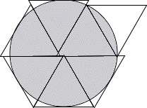 | 8. 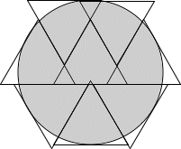 | 9. 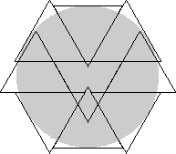 | ||
| r = .892+ Found by Maurizio Morandi in July 2009. | r = (453√3 - 3√347) / 752 = .969+ Found by Maurizio Morandi in June 2009. | r = (81√3 - 6√30) / 106 = 1.013+ Found by David Cantrell in July 2005. |
| 10. 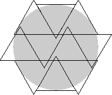 | 11. 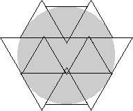 | 12. 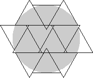 | ||
| r = (31√3 - √103) / 40 = 1.088+ Found by David Cantrell in July 2005. | r = (177√3 - 2√586) / 226 = 1.142+ Found by David Cantrell in July 2005. | r = (7√3 - √7) / 8 = 1.184+ Found by David Cantrell in July 2005. |
| 13. 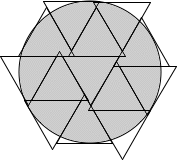 | 14. 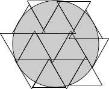 | 15. 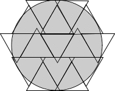 | ||
| r = (40√3 - √165) / 45 = 1.254+ Found by Maurizio Morandi in August 2009. | r = 1.290+ Found by Maurizio Morandi in August 2009. | r = 1.343+ Found by Maurizio Morandi in August 2009. |
| 16. 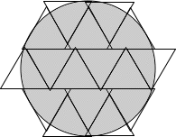 | 17. 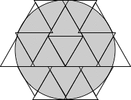 | 18. 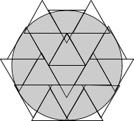 | ||
| r = 1.392+ Found by Maurizio Morandi in August 2009. | r = 1.434+ Found by Maurizio Morandi in August 2009. | r = 1.475+ Found by Maurizio Morandi in August 2009. |